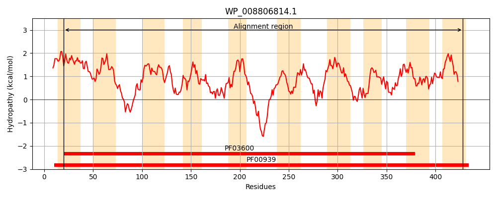
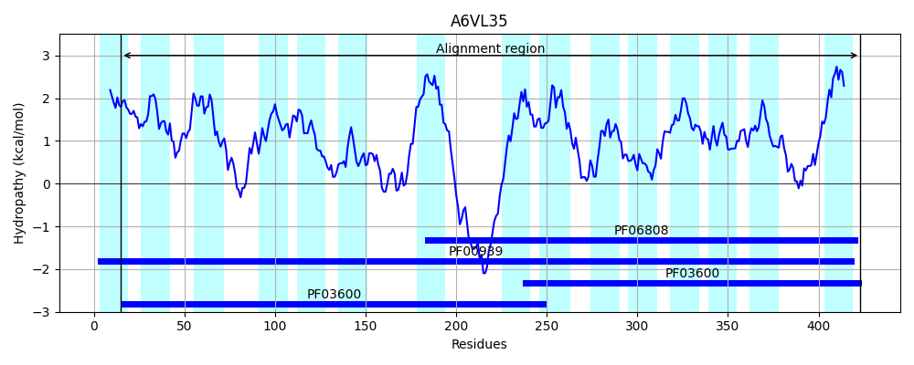
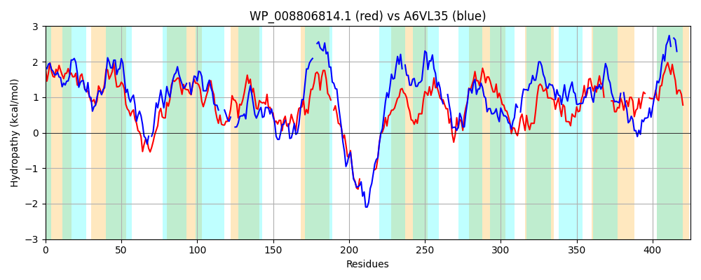

Hit Accession: A6VL35
Hit TCID: 2.A.47.5.3
Hit Description: gnl|BL_ORD_ID|658 gnl|TC-DB|A6VL35|2.A.47.5.3 Anion transporter OS=Actinobacillus succinogenes (strain ATCC 55618 / 130Z) GN=Asuc_0304 PE=4 SV=1
Mach Len: 425
e:0.000000
Query TMS Count : 10
Hit TMS Count: 15
TMS-Overlap Score: 8.400000
Predicted Substrates:CHEBI:30031;succinate(2-), CHEBI:29806;fumarate(2-)
BLAST Alignment:
Score: 184 , Bit scores: 75 bits, E-value: 8.0e-15, Alignment length: 425, Percentage identity: 22
Query: 20 IVLWATSLLPEFITALLFFAAAMMAKIAPPEVIFGGFASSAFWLVFSGFVLGIAIRKTGLADRAAQALSARLTDSWPRMVGSVVLLSYALAFVMPSNMGRIALLMPIVAAMARRAGIVDGSRGWFGLALAVGFGTFQLSATILPANVPNLVMSGAAEGSYGIHLNYVPYLLLHTPVLGWLKGAVLVALI-CRLFPGKPHPPRDLAPLP---------PMSRDEKRLAWLLAVVLTLWVTESWHGVGPAWTGLAAAVVTLLPRVGFINGEEFASGVNMRTCIYVAGILGLAIAVTQTGIGGAVGNALLQVMPLDKDNPFTSFLALTGITSALNFIMTANGVPALYTTFAQSFADATGFPLLSVIMIQVLG----YSTPLLPYQASPIVVAMGLGKVP--ARAGMQLCLALAAVSYLILLPLDYAWY 428
I+++A LP +TA++ + + + F GF + L + FV+G A+ +TG+A++ +S R S +++ +++++ ++ V+ SN G A+L+P++ ++ ++ D +R L + + F + L + NLV+ G S G + Y + P+L + G + LI RL P + + + P + LA L+A +L + V E + G+ + A++ ++ RV I ++ ++ + AG L LA A+ TG G + + +L + + N + + ++ L M+ AL S A + G +V+M V+G ++TP+ A+ +++++G + A+AG+ L + A + +ILLP+ + ++
Sbjct: 15 IIMFAWEKLPLAVTAMVVSVGLALTGVLSAKDAFMGFVDTNVILFVAMFVIGGALFETGMANKIGGVVS-RFATSERKLMVVLMVITGVMSGVL-SNTGTAAILIPVILGISAKS---DFARS--RLLMPMAFASTLGGNLSLIGSPNNLVVQGVLSQS-GDKFGFFEYAEIGVPIL--IIGIIFFVLIGYRLLPTQLNLHVEQEDYQAFHNHHNHIPKWKQWLSLAVLIATLLAM-VFEDFIGIKLYLSACVGALILVIMRV--ITEKQAYQAIDSQVVFLFAGTLALANALQTTGAGAQIAHTILGWLGA-QPNSYLLLFTILVLSCVLTNFMSNTATAALLAPIGLSIAHSLGADPKAVLMAVVVGSSCAFATPIAT-PANTMILSVGHYRFADYAKAGVPLIVVTIAAA-MILLPILFPFF 423 | Protein Hydropathy Plots: |
|---|
|  |  |
Pairwise Alignment-Hydropathy Plot:
|
|---|
|  |